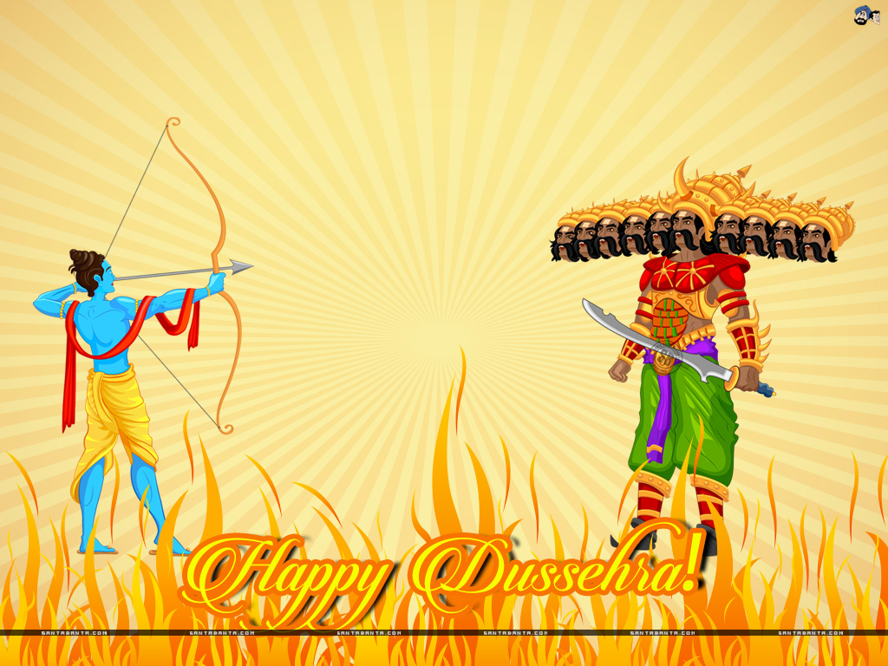
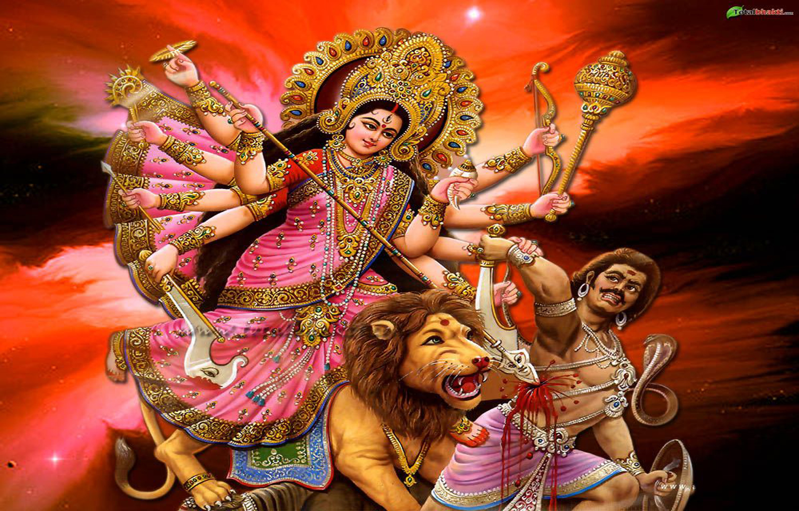

Why is Vijayadasami(Dusshera) celebrated?
Vijayadasami or Dusshera is an important Hindu Festival, celebrated normally in the month of October.Dusshera means Dus-Hara in sanskrit which translates to the defeat of the ten headed demon King, Ravana.This is the most well known reason for celebrating dusshera among the Hindu community.Although, dusshera is celebrated for various other reasons too.Lets find out in this story!
1.The victory of ram over ravana:

On this day Ram,the seventh avatar of vishnu killed ravana who abducted his wife sita and kept her captive in the city of lanka.Ram along with his brother lakshamn and devotee hanuman raised an army of monkeys and waged a war against the tyrant king and succeeded on this day of dusshera.
Thus,to mark ram's victory, huge statues of ram and ravana consisting of fireworks are created to mimic the killing of ravana by ram in several parts of india.This is known as "Ram-leela".
2.The victory of Durga over Mahishasur

Mahishasur is a combination of two words; Mahisha a buffalo and asura meaning demon.His father was an asura and mother a buffalo.As an asura he wanted to annihilate all devas and thus performed a severe penance to invoke Brahma. Please with his devotion, Brahma appeared before him and asked for a boon. Mahishasur asked brahma for immortality. Brahma politely refused saying , all those who are born should die and hence he could not grant this boon to him.So mahishasur instead asked for a boon that no man could ever kill him.Nothing was mentioned in the boon about a woman as mahishasur never imagined a woman to match his strength and defeat him.That thought was his biggest mistake.
Soon mahishasur wreaked havoc and defeated all of the gods including Indra.The gods then approched the trinity;Brahma,Vishnu and Shiva to help them.The trinity combined their power to create a beautiful woman called "Durga".She was equipped with celestial weapons and was made of pure energy.(Technically, durga is a form of parvathi herself.Some versions of the story illustrate parvati's avatar as durga.We should just take both as figures representing female power.)Mounting a lion, Durga waged war for 10 days and nine nights and finally killed Mahishasur on the day of dusshera,which was dashami.Thus, Vijayadasami came into existence.
This story could serve as an example for people underestimating female power and who treat women as 'Objects' rather than humans.The nine nights which durga fought against mahishasur are celebrated in several parts of india as "Nav-ratri", nav meaning nine. On each night parvati , the consort of shiva is said to be in one of her 9 forms and in durga form on the day of Vijayadasami.
As durga killed mahishasur, she is popularly known as 'Mahishasura-Mardini".
3.Pandavas recover their weapons
 Fast forward a few centuries to dwapara yuga, the era of Krishna.
Fast forward a few centuries to dwapara yuga, the era of Krishna.
Pandavas have lost in a dice game to the kauravas and are exiled to the forest for 12 years.They are to live their last year of exile in incognito.Thus, to spend their last year in incognito pandavas chose the city of virat ruled by the King Virat.At the start of their exile pandavas hid their weapons in a shami tree, which safeguarded them till their return.On the day of vijayadasami, pandavas completed their year of exile and recovered weapons from the sacred tree and defeated kauravas who were attacking the city of virat.
Since then, shami trees were worshipped and shami leaves were exchanged as 'gold' on the day of vijayadashami.